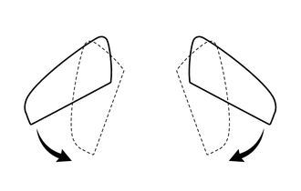
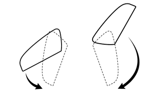
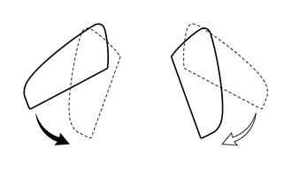
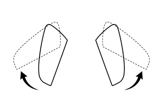
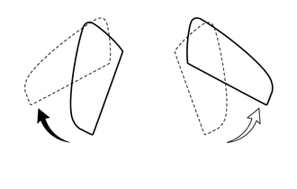

CHECK ELECTRICAL REMOTE CONTROL MIRROR FUNCTION
Turn the power switch on (IG).
With L on the mirror select switch selected, check that the outer rear view mirror assembly LH surface moves up, down, left and right normally.
With R on the mirror select switch selected, check that the outer rear view mirror assembly RH surface moves up, down, left and right normally.
CHECK POWER RETRACT MIRROR FUNCTION (w/ Retract Mirror)
Turn the power switch on (IG).
At each outer rear view mirror assembly position, check the retractable mirror operation when operating the retractable outer mirror switch.

Move both outer rear view mirror assemblies to the driving position.
Press the retractable outer mirror switch.
Check that the right and left outer rear view mirror assemblies move from the driving position to the retracted position.

Move both outer rear view mirror assemblies to the driving position.
Move one of the outer rear view mirror assemblies to the forward position by hand.
Press the retractable outer mirror switch.
Check that the outer rear view mirror assembly in the forward position moves to the retracted position, and check that the other mirror moves to the retracted position.

Move the outer rear view mirror assemblies to the driving position.
Move one of the outer rear view mirror assemblies to the retracted position by hand.
Press the retractable outer mirror switch.
Check that the outer rear view mirror assembly in the driving position moves to the retracted position.

Move both outer rear view mirror assemblies to the retracted position.
Press the retractable outer mirror switch.
Check that both outer rear view mirror assemblies move from the retracted position to the driving position.

Move both outer rear view mirror assemblies to the retracted position.
Move one of the outer rear view mirror assemblies to the driving position by hand.
Press the retractable outer mirror switch.
Check that the retracted outer rear view mirror assembly moves to the driving position.
Check the operation of the outer rear view mirror assemblies according to retractable outer mirror switch operations and power switch condition.
When the outer rear view mirror assemblies are operating, turn the power switch off and check that the mirror operation stops immediately.
Turn the power switch on (ACC) and press the retractable outer mirror switch. Check that the outer rear view mirror assemblies operate in the opposite direction.
Check the operation of the outer rear view mirror assembly when it is blocked by an obstacle.
When an outer rear view mirror assembly is moving to the retracted or driving position, block it by hand. Check that stops moving.
With the outer rear view mirror assembly stopped partway, press the retractable outer mirror switch. Check that the outer rear view mirror assembly moves in the opposite direction.
CHECK AUTO POWER RETRACT MIRROR FUNCTION (w/ Retract Mirror)
Tech Tips
The default setting is Door Lock. If necessary, the function can be set to "ACC" through the customize function.
With the power switch off and the mirror retract switch auto position, when the doors are unlocked through the entry function, wireless function or key-linked function, check that both outer rear view mirror assemblies move from the retracted position to the driving position, and stop in the driving position.
With the power switch off and the mirror retract switch auto position, when the doors are locked through the entry function, wireless function or key-linked function, check that both outer rear view mirror assemblies move from the driving position to the retracted position, and stop in the retracted position.
When the power switch is on (ACC) and then turned off while the mirror retract switch is auto position, check that both outer rear view mirror assemblies automatically move from the driving position to the retracted position.
When the power switch is off and then turned on (ACC) while the mirror retract switch is auto position, check that both outer rear view mirror assemblies automatically move from the retracted position to the driving position.
CHECK MIRROR HEATER FUNCTION
Turn the power switch on (IG).
Check that pressing the mirror heater switch (rear window defogger switch) illuminates the indicator and warms the mirror surfaces.
Check that after approximately 15 minutes, the indicator light turns off and the mirror heaters deactivate.